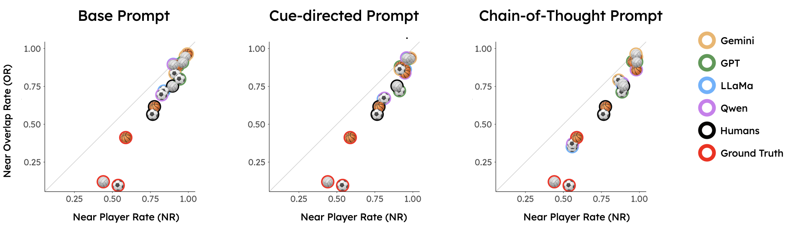
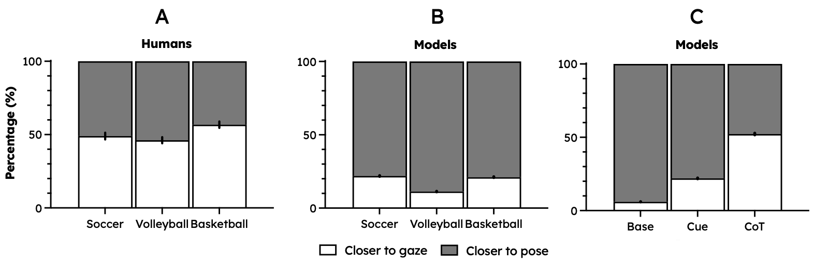
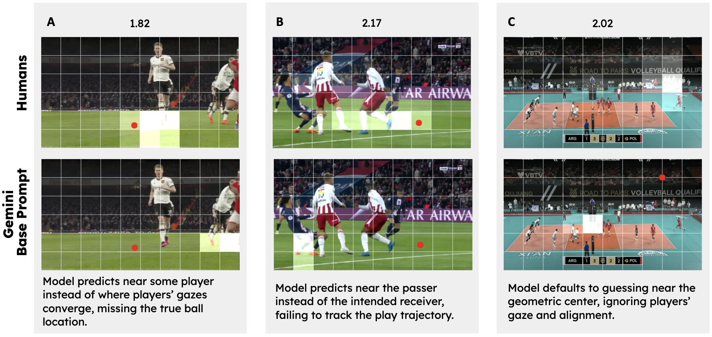

👩🏾💻 Results
We evaluate human participants and four state-of-the-art VLMs across three sports and multiple prompting strategies. Models consistently underperform humans not only in accuracy but also in spatial precision and distributional similarity.
Gemini
2.0-flash-001
Google Gemini 2.0 Flash
Google's latest multimodal model with enhanced vision capabilities and reasoning abilities.
GPT
4.1-mini
OpenAI GPT-4.1 Mini
OpenAI's efficient multimodal model optimized for speed and cost-effectiveness.
LLaMA
3.2-11B-Vision
Meta LLaMA 3.2 11B Vision
Meta's open-source vision-language model with 11B parameters and instruction tuning.
Qwen
2.5-VL-7B
Alibaba Qwen 2.5 VL 7B
Alibaba's vision-language model with strong multimodal understanding capabilities.
Base Prompt
(Level 0)
System Prompt:
The ball has been removed from this {sport} image. Your task is to infer the most likely location of the ball.
Respond in the following format:
Reasoning: <Explain where the ball is likely located and why.>
Cell: <What grid cell is the ball most likely located in? Respond with a label like F4.>
Cue-Directed
(Level 1)
System Prompt:
The ball has been removed from this {sport} image. Your task is to infer the most likely location of the ball.
The location of the players, where they are looking and their positions can help you infer the location of the ball.
Respond in the following format:
Reasoning: <Explain where the ball is likely located and why.>
Cell: <What grid cell is the ball most likely located in? Respond with a label like F4.>
COT Cue-Directed
(Level 2)
Two-Step Prompting Process:
Prompt 1 (Context Collection):
• Where are the players located?
• Where are the players looking?
• How are the players positioned?
Prompt 2 (Final Prediction):
The ball has been removed from this {sport} image. Here are some observations:
{context}
The above information could help you infer the ball's location.
Respond in the following format:
Reasoning: <Explain where the ball is likely located and why.>
Cell: <What grid cell is the ball most likely located in? Respond with a label like F4.>
Humans outperform models in all sports and levels
Models are less accurate than humans in all sports and levels as shown by the accuracy plot below and the euclidean distances to the ground thruth are also very large.

Figure: Accuracy across models vs. humans.
Models and humans do not find the same sports difficult
Volleyball is the most difficult for models but humans find it medium difficulty this can explain that there are differences in how they reason about the task. These differences can be explained by the following two heuristics.
Models fail due to primitive heuristics

Figure: Proximity to players across models vs. humans.
The most commonly used heuristics are:
- Center bias. Models and humans are both biased towards guessing near the center of the image, but models distribute their guesses more narrowly.
- Player proximity. When we drew bounding boxes around the players, we found that models' guesses very often overlap with the player's bounding boxes and are also within it much more than humans.
Models' textual reasoning uses pose more than gaze at lower prompting levels
Chain-of-thought prompts are more likely to improve models to reason like humans (about both pose and gaze evenly).

Figure: Pose and gaze counts by model and level.
🤸🏾 Qualitative Analysis
To better understand failure modes, we visualize model predictions alongside human guesses. Despite accurately describing scene elements in chain-of-thought prompts, models frequently disregard gaze direction, confuse player roles, or default to spatial heuristics such as center bias.

Example A: Neglect of Gaze
Model prediction clusters near player feet despite all player gaze converging left.
Example B: Role Confusion
Model incorrectly infers ball possession role, leading to distant guess from true location.
Example C: Center Bias
Model defaults to center of frame (net area), a low-probability ball location in volleyball.
💬 Discussion
Key Findings
Our results highlight fundamental limitations in current vision–language models when it comes to socially grounded object inference. Prompting strategies are insufficient to close the gap with humans, pointing to deeper issues in how models perceive and reason about social cues such as pose, and gaze.
Future Directions
Several future directions emerge from this work:
- Architectural innovations. New model designs explicitly tailored to capture social reasoning in visual scenes may be required, as current architectures appear biased toward spatial heuristics rather than agent dynamics.
- Broader domains. Expanding evaluation across additional sports and domains would test the robustness and generality of these findings.
- Controlled environments. Moving beyond static images, 3D interactive settings (e.g., Unity simulations) would allow systematic manipulation of gaze, pose, and player configurations to probe whether models can adapt to counterfactual changes.
- Counterfactual reasoning. Explicitly testing how models predict player positions given hypothetical ball placements (and vice versa) could reveal whether they are capable of reasoning beyond surface-level correlations.
The Challenge of Social Reasoning
It is worth noting that training a neural network to localize balls in images is not, by itself, a difficult task. What makes this benchmark distinctive is that success requires social reasoning under uncertainty: inferring hidden states from cues that humans naturally exploit. Addressing this challenge may require not just additional supervision but fundamentally different training objectives or architectures that embed social priors.
Moving Forward
The goal of this work is therefore not to provide a final solution, but to expose systematic blind spots in current models and to motivate progress on this problem. By releasing both our dataset and evaluation code, we hope to establish a foundation that the community can build upon in developing models with more human-like capacities for socially grounded inference.
✏️ Citation
If you find this benchmark or dataset useful in your research, please cite:
@misc{balamurugan2025spottheball,
title = {Spot The Ball: A Benchmark for Visual Social Inference in Sports Scenes},
author = {Balamurugan, Neha and Wu, Sarah and Eyzaguirre, Chris and Chun, Adam and Gaw, Gabe and Gerstenberg, Tobias},
booktitle = {Fill in later},
year = {2025}
}